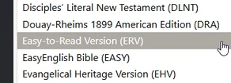
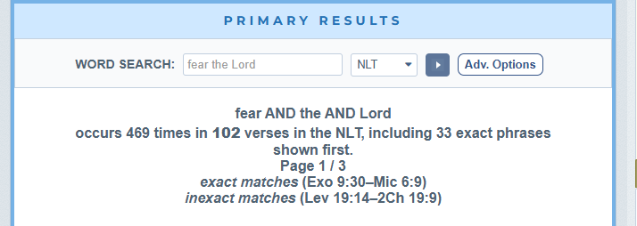
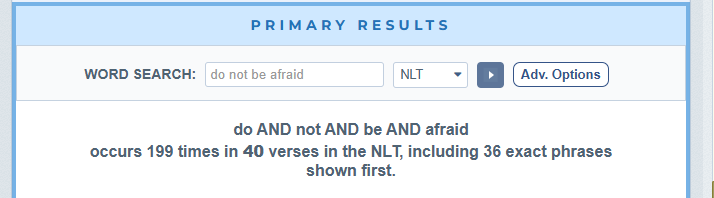

Blessed Sabbath to you. I don't have too much to share this week — I think I'm writing more out of a desire to stay connected to you all than anything else. Connection really is an underlying theme of the whole Bible, isn't it? We must be connected to God. We must be connected to each other. Even the Trinity — Father, Son, and Holy Spirit — is defined by being connected to itself. And what's the first thing that happens after Adam and Eve sin? They hide — from God and from each other. Disconnected. My daughter defines sin as meeting our needs in a way, or at a time and place, that God never intended. I've always defined it as death, separation. I think I need to fold another word into my own definition: disconnection.
Have any of you noticed your prayer life improving with age? I have. I'm not sure if it's tied to the brain tumor or just the awareness that prayer is one of the few things I can still fully do. I love the quote: those who have a great need for God find that they have a great God for their need. That's certainly true for me right now. I've been praying for you guys and for what you share at the end of our discussions — in a strange way it feels less like a choice and more like something I must do. As I listen to your prayer requests I feel a real weight settle on me, and something like “woe is me” if I don't pray afterward. If you asked me each week what to pray for me, I might honestly say: pray that your prayer requests don't bum me out too much. It sounds funny, but there's truth in it — probably a healthy paradox.
Speaking of paradoxes, I've been thinking more about Ezekiel's vision. Can you imagine actually seeing that? I wonder if he peed on himself. Something like: “When I saw it, I fell face down on the ground… and peed all over myself. Then I heard a voice speaking to me, ‘Stand up, son of man. Do not be afraid. And for God's sake, stop peeing on yourself.’” Not an exact quote from any translation I know of — maybe the ERV paraphrase.

It made me realize that being a prophet, speaking directly for God, is no easy calling. I started wondering how many times God made someone in the Bible metaphorically pee on themselves out of terror — the “do not be afraid” language shows up 199 times across 40 verses. But at the same time, God commands His people to fear Him 469 times across 102 verses. In a strange way, God seems to be telling us: don't be afraid — fear Me. Or, in the ERV translation: don't pee on yourself for any reason other than the Lord.

The fear of the Lord really is central to the Bible, and honestly hard for me to fully understand. I think I get the intent, though: be afraid of the sheer magnitude of God — His omniscience, His omnipotence, His omnipresence. It's a genuinely terrifying thing to fall into the hands of the living God. But don't avoid Him. Don't hide from Him. Don't put up your guard, or block Him on Facebook. He loves you more than you can imagine, and He can give you an abundant life — and He can also end your life. That's the paradox. I don't fully understand it, but that's what I think the intent is. — Erv

Comments